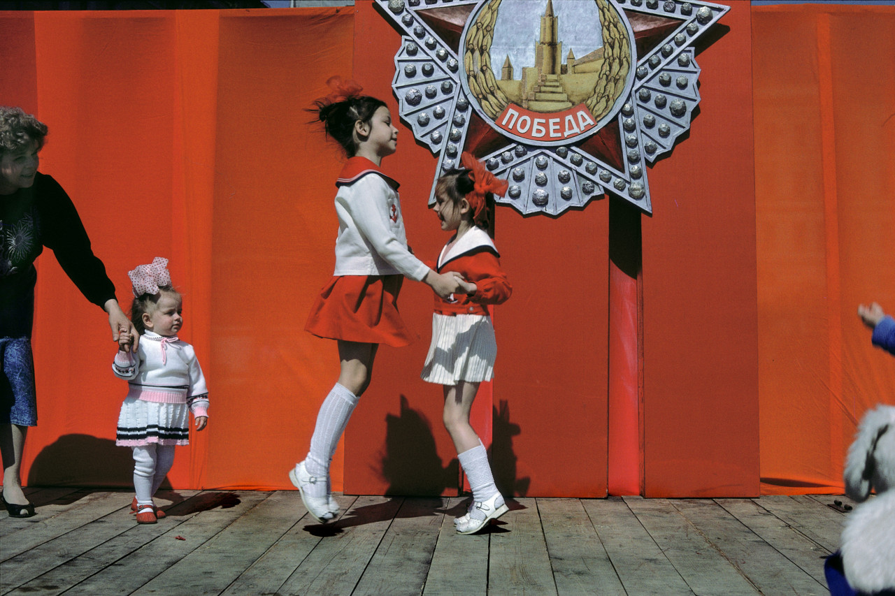
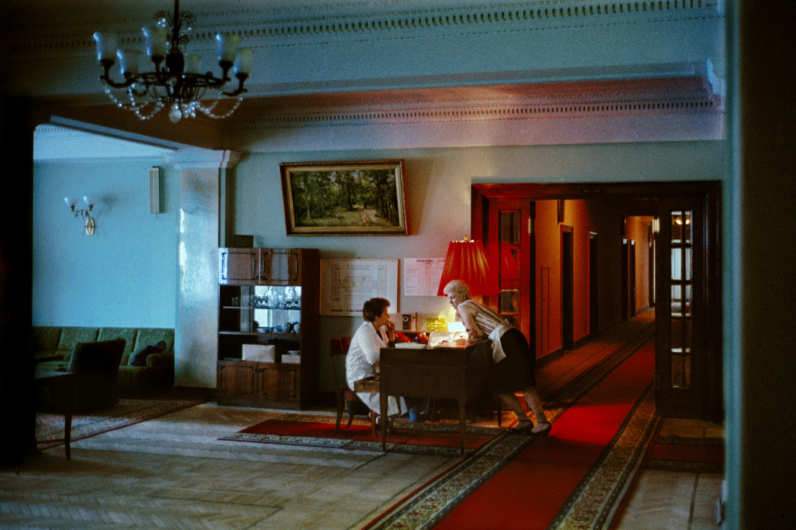

Russia, meanwhile, tells a quieter tale. ”It’s very exciting that I got a different palette there,” he says of Moscow’s pallid tones. “Like a painter you get a different set of colors.” The compositions are very different too; people – instead of objects – populate the frame. Indeed, he found Vegas much more lonely than Moscow; Russia is not a car country, society happens on the streets. “This was a very exciting period where everything was very much open,” he says. “I could walk into places, factories, anywhere, and nobody said no. Because they didn’t know anymore what to think; what was right and what was wrong.”
 “During my first stay in the USSR in 1969, I expected to discover communism, and I found Dostoyevsky and Gogol. In 1989, shortly before the fall of the Berlin Wall, I saw a society that was frozen and ossified, which no longer knew which god to turn to. Suddenly a palette of unknown, washed-out, muted colours was offered to me, the image of this universe which existed between two worlds. In 2009, the choice of an aggressive capitalism and frenzied consumerism imposed itself: flashy advertising invaded the public space. But the “Russian soul” still dominates; there is not a much greater feeling of freedom.” – Harry Gruyaert